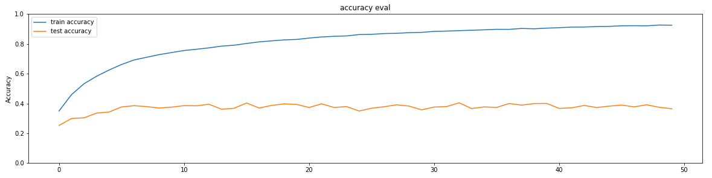

When learning machine learning algorithms, we were taught using train_test_split() method in sklearn.model_selection, which splits samples into random train and test subsets. If we apply this method to our samples, which were constructed from all folders(fold1~fold10) in the dataset, the rows of the sample are shuffled in random selections. The authors mentioned 'do not shuffle' because
"If you reshuffle the data (e.g. combine the data from all folds and generate a random train/test split) you will be incorrectly placing related samples in both the train and test sets, leading to inflated scores that don't represent your model's performance on unseen data. Put simply, your results will be wrong.""
The early stage of experiments shows the following training history with neuron=128, showing overfitting. We took care of this with drop-out and regularization: 
| Folders for test | Folders for validation | Folders for train |
|---|---|---|
| fold 1, 2 | fold 3 | fold 4, 5, 6, 7, 8, 9, 10 |
| fold 4, 5 | fold 6 | fold 7, 8, 9, 10, 1, 2, 3 |
| fold 7, 8 | fold 9 | fold 10, 1, 2, 3, 4, 5, 6 |
| fold 10, 1 | fold 2 | fold 3, 4, 5, 6, 7, 8, 9 |
Eunjeong Lee, ejlee127 at gmail dot com, last updated in Nov. 2020